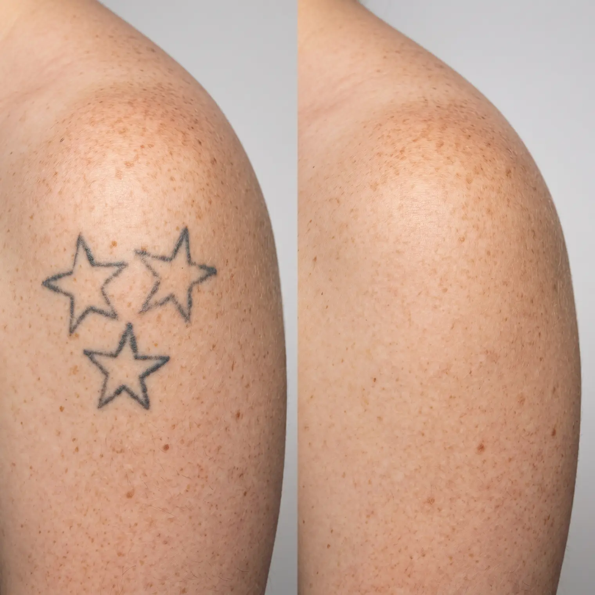

Removal creams promise a cheap, painless alternative to laser treatment. Here is what actually happens when ink meets a topical cream, and why the promise rarely matches the results.
9 min read·Last Updated: July 17, 2026
⚡ Quick Answer
Tattoo removal creams cannot reach ink that sits in the dermis, the deeper layer of skin where tattoo pigment is deposited. Creams only affect the outer epidermis, so at best they may lighten the very surface of a tattoo slightly while leaving the actual ink untouched. Laser removal remains the only proven method for breaking down ink deep in the skin.
Real fading requires reaching ink where it actually sits.
Search for tattoo removal online and you will inevitably encounter removal creams promising a painless, affordable alternative to laser treatment. They are marketed heavily, often with dramatic before-and-after photos, and they appeal to anyone hoping to skip the cost, time, and discomfort covered elsewhere in this guide. Unfortunately, the basic biology of how tattoos work makes these products fundamentally unable to deliver on that promise.
Understanding why requires a quick look at where tattoo ink actually sits in your skin, and why that location matters enormously for what can and cannot reach it. It also helps to understand why these products keep appearing on the market despite decades of consistent evidence that they do not work as advertised.
"I've had clients come in after months of using a cream, disappointed it barely did anything. It's not that they didn't use it right. The cream just physically can't get to where the ink is."
A Nashville laser removal technician
Get Our Recommended Nashville Clinics
Submit your details and receive our trusted recommendations for tattoo removal in Nashville.
Tattoo ink is deposited in the dermis, the second layer of skin beneath the outer epidermis. This placement is intentional and is exactly what makes tattoos permanent in the first place. The epidermis, the layer creams can actually penetrate, constantly sheds and regenerates every few weeks, which is why a tattoo in that layer alone would fade away naturally within a month or two.
Topical creams, regardless of their active ingredients, are formulated to work at the skin's surface. Getting an ingredient to meaningfully penetrate deep enough to reach and break down dermal ink, without causing significant skin damage in the process, is a genuinely difficult problem that no over-the-counter cream has solved.
This is not a marketing distinction or a matter of degree. It reflects a basic mismatch between where a problem exists and what a proposed solution is physically capable of reaching. Laser treatment works specifically because focused light energy can pass through the epidermis without significant absorption and reach ink particles in the dermis directly, delivering energy precisely where it is needed rather than relying on a substance to diffuse downward through skin tissue that is, by design, resistant to exactly that kind of penetration.
What Creams Can Sometimes Do
Slightly lighten the very outermost layer of a tattoo over months of use
Cause mild exfoliation that creates a temporary illusion of fading
Irritate skin enough to trigger inflammation, sometimes mistaken for progress
What Creams Cannot Do
Reach or break down ink sitting in the dermis
Produce the kind of fading laser treatment achieves
Fully remove any tattoo, regardless of size or age
The Real Risk, Not Just Wasted Money
Beyond simply not working, some removal creams pose genuine safety concerns. Certain products contain trichloroacetic acid or similar caustic ingredients strong enough to cause chemical burns, scarring, and permanent skin damage, essentially trading one form of unwanted marking for another, often worse one.
Products containing hydroquinone, sometimes included in creams marketed for fading, carry their own risks with prolonged use, including a rare skin condition called ochronosis that causes permanent blue-black discoloration, ironically similar in appearance to the tattoo ink someone was trying to remove in the first place.
Why This Market Keeps Existing
If removal creams have never worked reliably, a fair question is why they remain widely available and heavily marketed decades later. Part of the answer is straightforward: a topical product is dramatically cheaper to manufacture and sell than laser equipment, and a bottle of cream carries none of the training, licensing, or liability requirements that come with operating medical-grade laser devices. The business model works even if the product itself does not deliver meaningful results.
The other part of the answer is psychological rather than biological. Tattoo removal creams are typically used over weeks or months, during which normal skin changes, minor irritation, and simple wishful thinking can create the impression of gradual improvement, even when no meaningful change to the actual ink has occurred. By the time someone realizes the product is not working, they have often already spent considerably more time and money than a single honest consultation with a Nashville removal clinic would have cost them upfront.
Other DIY Methods, and Why They're Worse
Creams are not the only at-home approach people try before turning to laser treatment. Salt scrubbing, sometimes called salabrasion, involves physically abrading the skin with an abrasive salt paste, attempting to remove the top layers of skin containing the ink through sheer mechanical damage. This approach carries a significant risk of scarring, infection, and permanent skin texture changes, and even when partially effective at removing surface ink, cannot reliably reach ink deposited deeper in the dermis.
Chemical peels using high-concentration trichloroacetic acid, sometimes sold as at-home removal kits, work by causing a controlled chemical burn intended to slough off tattooed skin. In a controlled medical setting with appropriate concentrations, this can have limited legitimate uses, but at-home application without proper training carries serious risk of uneven burns, permanent scarring, and skin discoloration that can be considerably harder to address than the original tattoo.
None of these methods offer a genuine shortcut around the fundamental problem: ink in the dermis requires either breaking it down in place, which is what laser treatment does, or physically removing enough tissue to reach it, which carries far greater risk than most people attempting it at home fully understand.
Cream vs Laser, Side by Side

Full clearance is only realistic with laser treatment.
It helps to compare the two paths directly rather than in the abstract. A typical laser removal plan for a small to medium tattoo runs a defined number of sessions, spaced roughly six to eight weeks apart, with each session producing measurable, visible fading that a technician can document and show you. There is a clear endpoint: a course of treatment that ends in either full clearance or a fading result you approve of before a cover-up.
A cream regimen has no defined endpoint by comparison, because there is no mechanism by which continued use eventually reaches the ink. Manufacturers typically recommend ongoing daily or twice-daily application for many months, and when results fail to appear, the standard advice is simply to keep using the product longer, since there is no session-by-session progress to point to and no way to say definitively that it has failed rather than "not worked yet."
That open-ended structure is itself worth factoring into any honest cost comparison. Laser treatment has a knowable total cost once your provider assesses your tattoo's size, ink density, and color. A cream regimen's total cost depends entirely on how long you are willing to keep buying more of a product that was never going to reach the ink in the first place, which in practice often means the true cost is higher, not lower, once someone eventually books a real consultation.
Myth
If a removal cream shows before-and-after results online, it must work.
Fact
Marketing photos can reflect lighting differences, natural fading from age, partial cover-up with makeup, or simply misleading before-and-after pairing rather than genuine results from the product.
Myth
Natural or "organic" removal creams are a safer alternative to laser treatment.
Fact
Natural branding does not change the basic biology involved. These products still cannot reach dermal ink, and some natural ingredients can still cause skin irritation or allergic reactions.
If Cost Is the Real Concern
The appeal of removal cream usually comes down to laser treatment's cost and time commitment, both very real concerns. But choosing a cream does not actually solve either problem, since spending months on a product that does not work is its own kind of wasted time and money, on top of whatever you eventually spend on laser treatment anyway.
If budget is the primary barrier, our cost guide covers realistic financing options and package pricing that can make laser treatment more manageable than the sticker price suggests. If your real goal is a faster, less expensive path to a specific outcome, like preparing for a cover-up rather than full clearance, our partial removal guide covers a genuinely effective way to reduce both cost and timeline.
It is worth running the actual numbers before assuming a cream is the more economical choice. A typical removal cream regimen, used consistently over several months as directed, often costs more in total than a package of several laser sessions at a Nashville clinic, without producing a comparable result. The apparent savings are usually an illusion created by the smaller size of each individual payment rather than a genuinely lower total cost.
✓
Reviewed by a tattoo artist with over 10 years of industry experience, who has watched laser removal technology and technique improve dramatically over the past decade and regularly advises clients on full removal versus partial fading for a cover-up.
Not Sure Which Nashville Clinic Is Worth Your Money?
Skip the creams that don't work. Tell us about your tattoo and we will point you to a clinic that actually gets results.
Thanks! We will match you with the right clinic shortly.
Frequently Asked Questions
Are there any FDA-approved tattoo removal creams?
No topical cream has been FDA-approved as an effective tattoo removal treatment. Laser-based removal is the only method with substantial clinical backing for actually breaking down dermal ink.
Can microneedling combined with cream help remove a tattoo?
Microneedling can create tiny channels that allow topical products to penetrate slightly deeper, but results remain limited compared to laser treatment and carry their own risks of scarring and infection if not done properly.
Is there any legitimate use for removal creams?
Some products may help with very minor surface exfoliation or as a supplementary skin care step, but none should be relied upon as a primary removal method for an actual tattoo.
Why do some removal creams seem to lighten tattoos slightly?
Mild exfoliation and skin irritation can create a temporary lightened appearance in the very top layer of skin, which fades once the epidermis regenerates, without any lasting effect on the actual dermal ink.
Are DIY tattoo removal methods like salt scrubbing safer than creams?
No, these methods are generally more dangerous, causing significant skin trauma without reliably reaching dermal ink. They carry a high risk of infection and permanent scarring.
Could future cream technology eventually work as well as lasers?
Some experimental topical and injectable approaches are in early research stages, but as of today, no product on the market comes close to matching laser treatment's proven effectiveness for actual dermal ink removal.